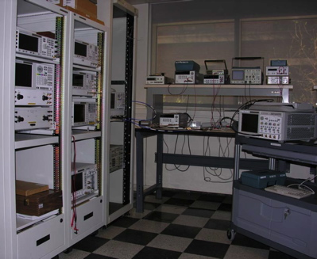
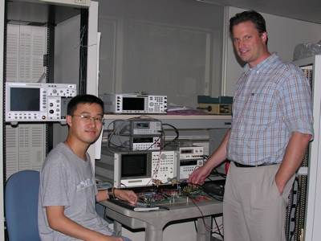
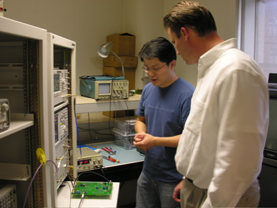
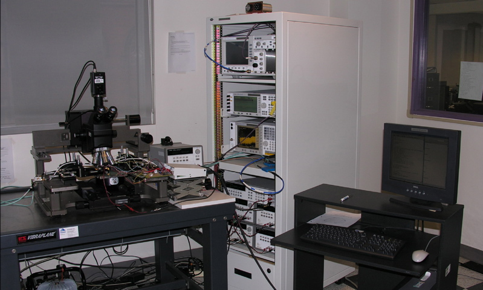

Analog & RF IC characterization laboratory
We have established state-of-the-art laboratory facilities at Columbia University specifically designed for the testing and characterization of analog, RF and high-speed integrated circuits up to 40GHz. The laboratory is generously equipped with major high-performance components and test and measurement systems. State-of-the-art equipment has recently been acquired through an NSF-MRI grant in 2003 and associated matching funds from the University.
The available instruments include a DC-40GHz spectrum analyzer, a 10MHz-40GHz 4-port network analyzer, a 4Gs/s real-time sampling and a 40-GHz bandwidth repetitive sampling oscilloscope, a 100kHz-6GHz vector signal generator, a 100kHz-20GHz and a 100kHz-40GHz continuous-wave microwave generators, high frequency passive and active probes, precision multi-meters, and a precision audio signal analyzer. The lab is equipped with an RF wafer probe station with a collection of DC-40GHz RF probes.
The lab further contains numerous lab accessories and general electronic lab instruments such as power supplies, multi-meters, counters, function generators, pattern generators, logic analyzers and oscilloscopes. Also mounting equipment such a soldering stations and a bonding machine, and a thermal chamber are available.
An extensive set of professional CAD tools for integrated circuit design, based on the Cadence Systems and Mentor Graphics tools framework, is available. This includes schematic capture, circuit simulators, logic synthesis and simulation tools, layout tools, and verification and extraction tools. A network of high end workstations, file servers and compute servers is available to run these tools.



